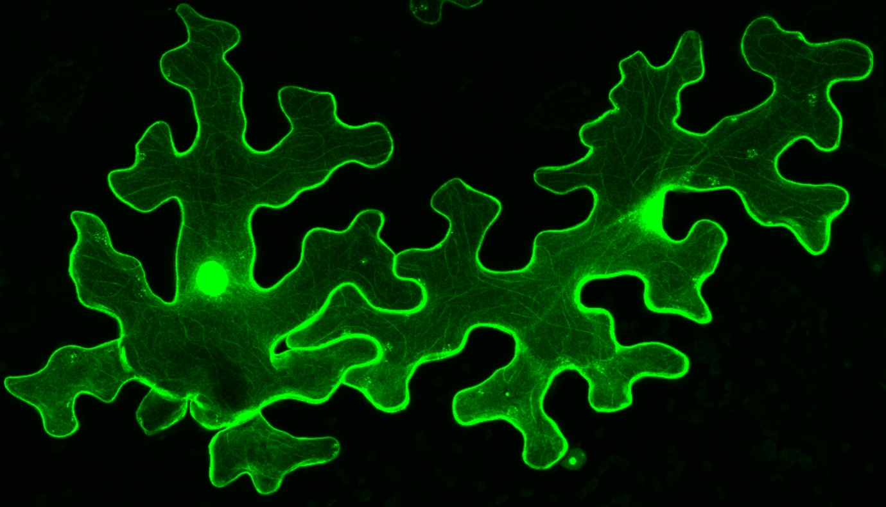

01
Evolution of Chromatin Regulators
Reconstructing the emergence and diversification of chromatin regulatory proteins across plant and eukaryotic lineages.
PLANT EPIGENOME • CHROMATIN • EVOLUTION
Plant Chromatin Regulation, Genome Organisation & Evolution
I study how chromatin regulatory systems evolve, function and shape genome organisation, development and adaptation in plants.

ABOUT
My research focuses on the molecular and evolutionary principles that connect chromatin regulation with genome organisation, plant development and environmental adaptation.
I combine evolutionary biology, molecular biology, epigenetics, chromatin biology, genomics and computational approaches to investigate how regulatory systems emerge, diversify and function across plant lineages.
CURRENT POSITION
Institute of Plant Molecular Biology (IPMB)
Biology Centre CAS
České Budějovice, Czech Republic
Lineage-specific structural diversification of the Enhancer of Zeste (EZ)-SANT domain across eukaryotes.
RESEARCH
My research programme explores how plant chromatin regulatory systems evolve and how these systems influence genome organisation and biological responses.
Reconstructing the emergence and diversification of chromatin regulatory proteins across plant and eukaryotic lineages.
Investigating how chromatin regulators interact with proteins, DNA and chromatin to establish functional regulatory states.
Understanding how chromatin regulatory networks contribute to nuclear organisation, chromatin architecture and genome-wide regulation.
Exploring how epigenome regulation influences plant development, cellular identity, environmental responses and adaptation.
RESEARCH FRAMEWORK
A central goal of my research is to understand how evolutionary innovation in chromatin regulatory systems translates into molecular function and ultimately influences plant development and adaptation.


EXPERIMENTAL APPROACH
My research integrates molecular and cellular experiments with evolutionary and genomic approaches to understand how chromatin regulatory mechanisms operate in plants.
This interdisciplinary approach allows regulatory proteins and complexes to be investigated from their evolutionary origin through their molecular interactions to their biological function.
RESEARCH VISION
Evolutionary change, molecular regulation and genome architecture represent interconnected layers of plant biology.
Regulatory innovation across lineages
Molecular regulatory networks
Nuclear organisation and architecture
Cellular identity and developmental control
Environmental response and plasticity
SELECTED PUBLICATIONS
Selected publications highlighting my work on plant chromatin regulation, epigenome evolution and regulatory networks.
PREPRINT • LEAD & CO-CORRESPONDING AUTHOR
Khan, A., Kusová, A., Skalák, J., Ghosh, B., Yang, T., Kelling, A.L.V., Hagemann, L., Panigrahi, K.C.S., Hejátko, J., Prochazkova Schrumpfova, P., Zhou, Y., Farrona, S., Mozgová, I. & Schubert, D.
View publication ↗NEW PHYTOLOGIST • LEAD AUTHOR
Khan, A., Haider, S., Sharaf, A., Kusová, A., Skalák, J., Jourdain, C., Rennie, M., Schrumpfová, P.P., Hejátko, J., Schubert, D. & Farrona, S.
View publication ↗MOLECULAR PLANT • LEAD & CO-CORRESPONDING AUTHOR
Khan, A. & Farrona, S.
Molecular Plant, 2026.
CURRENT OPINION IN PLANT BIOLOGY • LEAD AUTHOR
Khan, A., Ghosh, B. & Schubert, D.
Current Opinion in Plant Biology, 88, 102783 (2025).
Featured figure ↓PLANT MOLECULAR BIOLOGY • COLLABORATOR
Kusová, A., Steinbachová, L., Přerovská, T., Drábková, L.Z., Paleček, J., Khan, A. et al.
View publication ↗MOLECULAR PLANT • FIRST CO-AUTHOR
Shrestha, A., Khan, A. & Dey, N.
View publication ↗FEATURED REVIEW
Khan, A., Ghosh, B. & Schubert, D. (2025)
HONOURS & AWARDS
Marie Skłodowska-Curie Individual Fellowship (MSCA-IF-2025).
Proposal score: 92.20%Marie Skłodowska-Curie Individual Fellowship (MSCA-IF-2024).
Proposal score: 87.20%Department of Biology, Chemistry and Pharmacy, Freie Universität Berlin.
MSCA-IF-EF-ST, proposal on the evolution and function of plant PWO proteins.
Total score: 99.60%International Conference on Plant Developmental Biology & 3rd National Arabidopsis Meeting.
ACADEMIC JOURNEY
Institute of Plant Molecular Biology, Biology Centre CAS, České Budějovice.
Epigenetics of Plants, Freie Universität Berlin.
Institute of Plant Molecular Biology, Biology Centre CAS.
Institute of Life Sciences, DBT, Government of India, affiliated with Utkal University.
Utkal University, Bhubaneswar, India.
Ramjas College, University of Delhi, India.
CONTACT
I am interested in research collaborations and scientific exchange in plant chromatin regulation, epigenome evolution, genome organisation and plant developmental biology.
Email
ahamed.khan@fu-berlin.de
Location
České Budějovice, Czech Republic